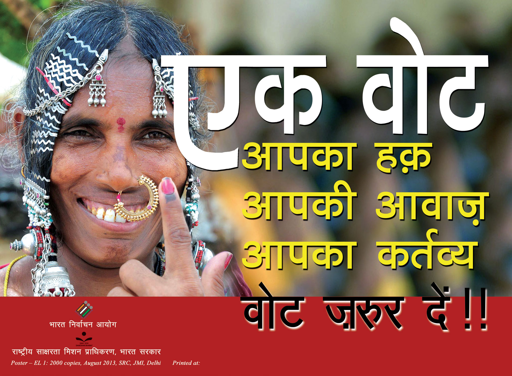

Election Commission of Rajasthan
Vote Today For Better Tommorow
Be Democratic By Cast Your Vote
The Election Commission of Rajasthan is an autonomous constitutional authority responsible for administering
election processes in Rajasthan. The body administers elections to the Lok Sabha, Rajya Sabha, state Legislative
Assemblies in India, and the offices of the President and Vice President in the country.The Election Commission
operates under the authority of Constitution per Article 324,and subsequently enacted Representation of the
People Act.
The Commission has the powers under the Constitution, to act in an appropriate manner whenthe enacted
laws make insufficient provisions to deal with a given situation in the conduct of an election.
Being a constitutional authority, Election Commission is amongst the few institutions which function with both
autonomy and freedom, along with the country’s higher judiciary, the Union Public Service Commission and the
Comptroller and Auditor General of India. The Election Commission had tried to bring improvements in election
procedures by the introduction of Electronic voting machines or EVMs. It was thought that these would reduce
malpractices and improve efficiency. It was first tried out on an experimental basis in the state of Kerala for
the 1982 Legislative Assembly Elections.
After a successful testing and the legal inquiries, the Commission took
the decision to begin the use of these voting machines.The Election Commission launched a web site of its own on
28 February 1998 in order to provide accurate information, management, administration and instant results of the
elections. In an effort to prevent electoral fraud, in 1993, EPICs or Electors Photo Identity Cards were issued,
which became mandatory by the 2004 elections.

However ration cards have been allowed for election purposes in
certain situations.